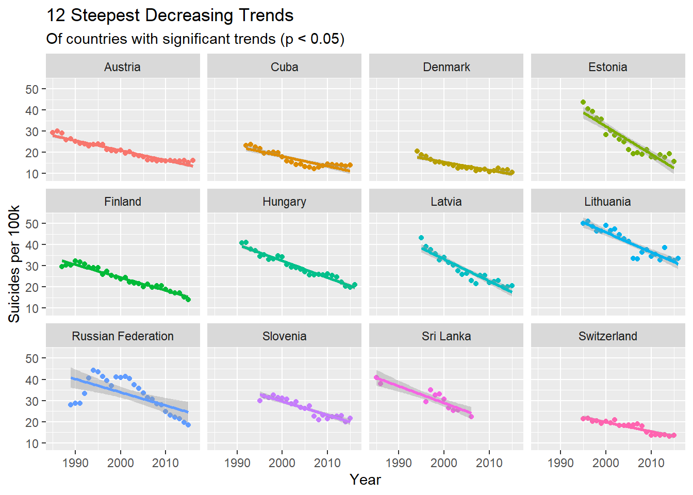

Suicide rate chages with year
suicide <- read_csv("./data/master.csv") %>%
janitor::clean_names() %>%
as.data.frame()
suicide = suicide %>%
mutate(
continent = countrycode(sourcevar = suicide[, "country"],
origin = "country.name",
destination = "continent")
)
country_year <- suicide %>%
group_by(country, year, continent) %>%
dplyr::summarize(suicides = sum(suicides_no),
population = sum(population),
suicide_per_100k = (suicides / population) * 100000,
gdp_per_capita = mean(gdp_per_capita),
gdp_for_year = mean(gdp_for_year))
country_year_trends <- country_year %>%
ungroup() %>%
nest(-country) %>% # format: country, rest of data (in list column)
mutate(model = map(data, ~ lm(suicide_per_100k ~ year, data = .)), # for each item in 'data', fit a linear model
tidied = map(model, tidy)) %>% # tidy each of these into dataframe format - call this list 'tidied'
unnest(tidied)
country_year_sig_trends <- country_year_trends %>%
filter(term == "year") %>%
mutate(p.adjusted = p.adjust(p.value, method = "holm")) %>%
filter(p.adjusted < .05) %>%
arrange(estimate)
country_year_sig_trends$country <- factor(country_year_sig_trends$country,
ordered = T,
levels = country_year_sig_trends$country)
p1 = ggplot(country_year_sig_trends, aes(x = country, y = estimate, col = estimate)) +
geom_point(stat = 'identity', size = 4) +
geom_hline(yintercept = 0, col = "grey", size = 1) +
scale_color_gradient(low = "green", high = "red") +
geom_segment(aes(y = 0,
x = country,
yend = estimate,
xend = country), size = 1) +
labs(title = "Change per year (Suicides per 100k)",
subtitle = "Of countries with significant trends (p < 0.05)",
x = "Country", y = "Change Per Year (Suicides per 100k)") +
scale_y_continuous(breaks = seq(-2, 2, 0.2), limits = c(-1.5, 1.5)) +
theme(legend.position = "none") +
coord_flip()
ggplotly(p1)top12_increasing <- tail(country_year_sig_trends$country, 12)
p2 = country_year %>%
filter(country %in% top12_increasing) %>%
ggplot(aes(x = year, y = suicide_per_100k, col = country)) +
geom_point() +
geom_smooth(method = "lm") +
facet_wrap(~ country) +
theme(legend.position = "none") +
labs(title = "12 Steepest Increasing Trends",
subtitle = "Of countries with significant trends (p < 0.05)",
x = "Year",
y = "Suicides per 100k")
ggplotly(p2)top12_decreasing <- head(country_year_sig_trends$country, 12)
p3 = country_year %>%
filter(country %in% top12_decreasing) %>%
ggplot(aes(x = year, y = suicide_per_100k, col = country)) +
geom_point() +
geom_smooth(method = "lm") +
facet_wrap(~ country) +
theme(legend.position = "none") +
labs(title = "12 Steepest Decreasing Trends",
subtitle = "Of countries with significant trends (p < 0.05)",
x = "Year",
y = "Suicides per 100k")
ggplotly(p3)The relationship between suicide rate and gdp_per_capita
continent_gdp_trends <- country_year %>%
ungroup() %>%
nest(-continent) %>%
mutate(model = map(data, ~ lm(suicide_per_100k ~ gdp_per_capita, data = .)),
tidied = map(model, tidy)) %>%
unnest(tidied)
continent_gdp_sig_trends <- continent_gdp_trends %>%
filter(term == "gdp_per_capita") %>%
mutate(p.adjusted = p.adjust(p.value, method = "holm")) %>%
filter(p.adjusted < .05) %>%
arrange(estimate)
continent_gdp_sig_trends$continent <- factor(continent_gdp_sig_trends$continent,
ordered = T,
levels = continent_gdp_sig_trends$continent)
continent_gdp_sig_trends_significant = continent_gdp_sig_trends %>%
filter(continent == c("Europe", "Americas", "Oceania"))
p4 = ggplot(continent_gdp_sig_trends_significant, aes(x = continent, y = estimate, col = estimate)) +
geom_point(stat = 'identity', size = 1) +
geom_hline(yintercept = 0, col = "grey", size = 4) +
scale_color_gradient(low = "green", high = "red") +
geom_segment(aes(y = 0,
x = continent,
yend = estimate,
xend = continent), size = 1) +
labs(title = "Change per year (Suicides per 100k)",
subtitle = "Of countries with significant trends (p < 0.05)",
x = "Country", y = "Change Per Year (Suicides per 100k)") +
scale_y_continuous(breaks = seq(-0.00015,0.00015, 0.00001), limits = c(-0.00015, 0.00015)) +
theme(legend.position = "none") +
coord_flip() +
theme(axis.text.x = element_text(angle = 90, hjust = 1))
ggplotly(p4)p5 = ggplot(country_year, aes(x = gdp_per_capita, y = suicide_per_100k, col = continent)) +
geom_point() +
geom_smooth(method = "lm") +
scale_x_continuous(labels=scales::dollar_format(prefix = "$"), breaks = seq(0, 125000, 20000)) +
theme(axis.text.x = element_text(angle = 90, hjust = 1)) +
facet_grid(~continent) +
labs(
x = "",
y = ""
)
ggplotly(p5) %>%
layout(xaxis = list(title = "gdp per capita"),
yaxis = list(title = "suicide per 100k"))Happiness score are related to ?
## clean the data
happiness_2015 <- read_csv("./data/2015.csv") %>%
janitor::clean_names() %>%
mutate(
year = 2015
) %>%
select(-region, -standard_error) %>%
rename(hap_rank = happiness_rank,
hap_score = happiness_score,
gdp_capita = economy_gdp_per_capita,
life_expec = health_life_expectancy,
corruption = trust_government_corruption,
residual = dystopia_residual
)
happiness_2016 <- read_csv("./data/2016.csv") %>%
janitor::clean_names() %>%
mutate(
year = 2016
) %>%
select(-region, -lower_confidence_interval, -upper_confidence_interval) %>%
rename(hap_rank = happiness_rank,
hap_score = happiness_score,
gdp_capita = economy_gdp_per_capita,
life_expec = health_life_expectancy,
corruption = trust_government_corruption,
residual = dystopia_residual
)
happiness_2017 <- read_csv("./data/2017.csv") %>%
janitor::clean_names() %>%
mutate(
year = 2017
) %>%
select(-whisker_high, -whisker_low) %>%
rename(hap_rank = happiness_rank,
hap_score = happiness_score,
gdp_capita = economy_gdp_per_capita,
life_expec = health_life_expectancy,
corruption = trust_government_corruption,
residual = dystopia_residual
)
happiness_2015 = happiness_2015[, c(1,11,2,3,4,5,6,7,8,9,10)]
happiness_2016 = happiness_2016[, c(1,11,2,3,4,5,6,7,8,9,10)]
happiness_2017 = happiness_2017[, c(1,11,2,3,4,5,6,7,9,8,10)]
happiness = rbind(happiness_2015, happiness_2016, happiness_2017)
## generate correlation plot
happiness_2015_cor = happiness_2015 %>% select(-year)
happiness_2016_cor = happiness_2016 %>% select(-year)
happiness_2017_cor = happiness_2017 %>% select(-year)
Num.cols_2015 <- sapply(happiness_2015_cor, is.numeric)
Num.cols_2016 <- sapply(happiness_2016_cor, is.numeric)
Num.cols_2017 <- sapply(happiness_2017_cor, is.numeric)
Cor.data_2015 <- cor(happiness_2015_cor[, Num.cols_2015])
Cor.data_2016 <- cor(happiness_2016_cor[, Num.cols_2016])
Cor.data_2017 <- cor(happiness_2017_cor[, Num.cols_2017])
corrplot(Cor.data_2015, method = 'square', addCoef.col = "black", tl.col ="black", tl.srt = 45, diag = FALSE, number.cex = .7) ## 2015
corrplot(Cor.data_2016, method = 'square', addCoef.col = "black", tl.col ="black", tl.srt = 45, diag = FALSE, number.cex = .7) ## 2016corrplot(Cor.data_2017, method = 'square', addCoef.col = "black", tl.col ="black", tl.srt = 45, diag = FALSE, number.cex = .7) ## 2017